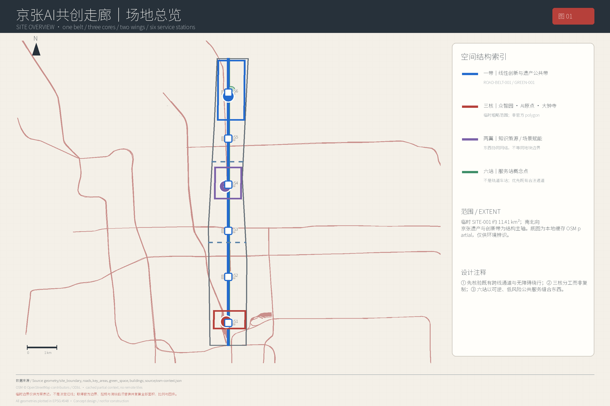
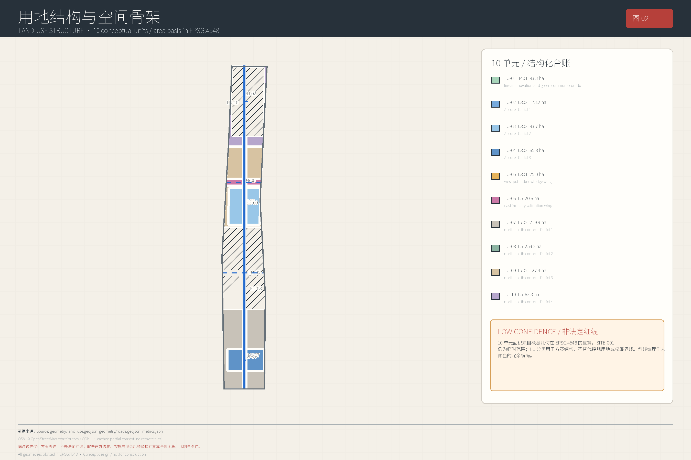
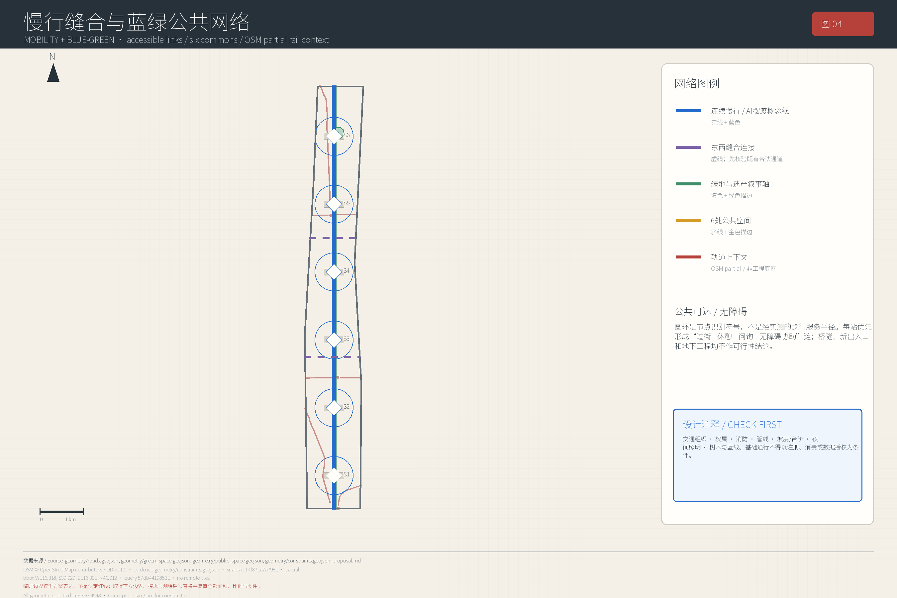
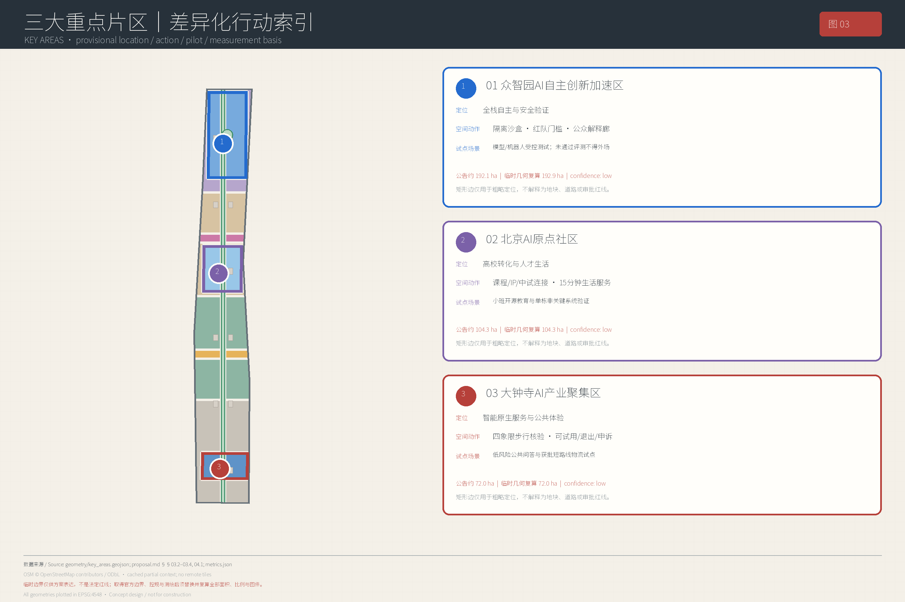
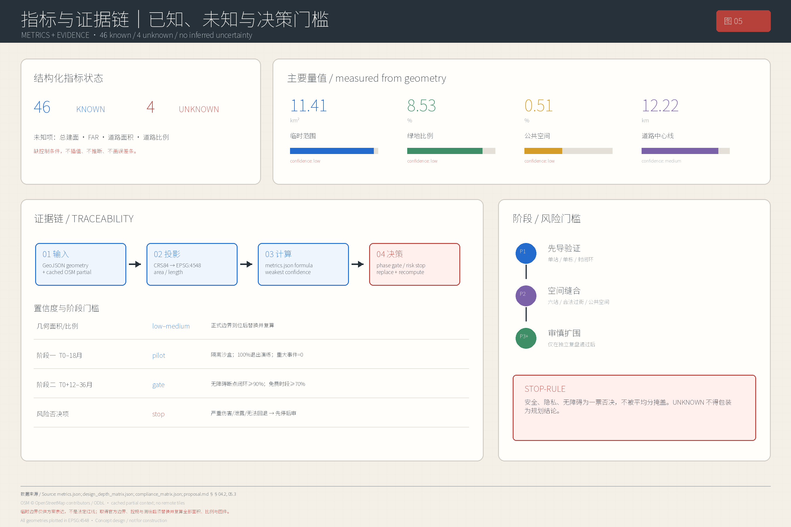

众智园 AI 自主创新加速区
全栈验证、安全治理、开放标准与低碳算力。
JINGZHANG AI COMMONS · EVIDENCE DASHBOARD
一条铁路时间轴串联三核创新链，两翼补齐转化与公共验证，六站把 AI 服务放回日常。页面完全离线，结论按 known、unknown 与临时边界分级。
三层范围串联统筹研究、总体设计和重点区域；总览地图将用地分区、交通慢行、蓝绿公共空间、建筑与更新项目、AI 场景放在同一证据链中。核心指标与自检状态采用同一 metrics.json 口径。

三核分别承担自主创新、成果转化和智能原生产业服务。
全栈验证、安全治理、开放标准与低碳算力。
校—园—社区转化、开源课程与人才生活。
智能原生服务、企业共性服务与站城协同。




公共服务 6 张、产业与城市验证 6 张；筛选保持键盘焦点与明确状态。
服务对象：老人、残障人士、儿童照护者、访客。空间载体：ROAD-BELT-001 与六处服务站。[data:geometry/roads.geojson#ROAD-BELT-001] 输入数据：经核验的坡度、台阶、施工封闭、照明和公共设施状态；OSM 仅作 partial 背景。隐私边界：不做人脸、不保存连续个体轨迹，定位可仅在端侧处理。人工接管/退出：一键转人工服务站；提供纸质地图和现场导视；用户可清除本次路线。运营主体：建议由公共空间运营方牵头，残障组织参与审查。KPI：无障碍断点闭环率、错误路线纠正时长、
服务对象：老人、慢病居民、访客。空间载体：PUBLIC-006 代际帮助站。[data:geometry/public_space.geojson#PUBLIC-006] 输入数据：公开的机构、科室、开放时间和无障碍信息，不接入病历。隐私边界：不做诊断、不存健康问答原文，敏感问题默认离线。人工接管/退出：转接现场社工或官方热线；紧急情况提示拨打急救电话；用户可选择纸质清单。运营主体：建议由社区公共服务机构牵头，医疗专业人员审核知识库。KPI：错误转介率、人工复核覆盖率、老年用户完成率。试点阶段：阶段一，仅做信息
服务对象：儿童、青年、高校师生、居民。空间载体：PUBLIC-002 开源学习台阶。[data:geometry/public_space.geojson#PUBLIC-002] 输入数据：清权课程、开放资料、教师审核题库。隐私边界：不建立儿童商业画像，不把学习对话用于模型训练。人工接管/退出：教师可关闭生成内容并切换离线教案；家长/学生可删除记录。运营主体：建议由高校与社区教育机构共管。KPI：课程免费覆盖、事实错误纠正时长、教师复核率、无障碍版本覆盖。试点阶段：阶段一，小班、离线沙盒；教育 AI 不替代教师
服务对象：居民、学生、游客、研究者。空间载体：GREEN-001 线性遗产叙事轴。[data:geometry/green_space.geojson#GREEN-001] 输入数据：档案馆、博物馆及经专家审核的公开史料。隐私边界：不追踪参观路径，不基于身份差异化推送商业内容。人工接管/退出：每条生成解说显示来源并可转人工讲解；争议内容下线复核。运营主体：建议由遗产研究机构、园林运营和社区共同编辑。KPI：来源标注率、纠错闭环、人工讲解场次、无障碍音频覆盖。试点阶段：阶段一，从三处史料核验点开始。
服务对象：儿童、青年、老人、残障人士及照护者。空间载体：PUBLIC-004 包容运动场。[data:geometry/public_space.geojson#PUBLIC-004] 输入数据：设施开放状态、天气、活动预约和匿名设备故障。隐私边界：不采集儿童影像或生物特征；客流仅做不可逆聚合。人工接管/退出：现场管理员有停机权；保留无设备的自由活动时段。运营主体：建议由社区体育机构与无障碍顾问共管。KPI：跨年龄活动次数、设施故障闭环、免费时段、伤害事件。试点阶段：阶段二，先以非联网互动设施验证。
服务对象：居民、中小企业、访客、城市服务人员。空间载体：PUBLIC-001 青年公共前场。[data:geometry/public_space.geojson#PUBLIC-001] 输入数据：公开办事指南、活动规则和服务目录。隐私边界：不处理身份证明原件，不跨用途拼接咨询记录。人工接管/退出：低置信答案拒答并转人工；纸质/电话渠道并行；可申请删除会话。运营主体：建议由公共服务窗口负责内容，技术方仅提供工具。KPI：转人工率、错误答案率、申诉闭环时长、非数字渠道可用率。试点阶段：阶段一，仅覆盖低风险公开信息
服务对象：高校师生、中小企业、开发者、检测机构。空间载体：众智园受控实验室。输入数据：合成数据、清权测试集、模型卡和威胁模型。隐私边界：生产数据不得进入；测试数据按项目隔离和到期删除。人工接管/退出：安全负责人可断网、停算、撤销凭据并封存日志。运营主体：建议由独立检测机构牵头，高校和园区协同。KPI：漏洞发现/闭环、可复现实验率、供应商可替换率、零敏感数据外泄。试点阶段：阶段一，完全隔离沙盒；未通过红队评测不得外场部署。[data:geometry/key_areas.geojson#PROV-KEY-001]
服务对象：机器人企业、配送员、残障人士、园区运维。空间载体：未来交接场的封闭测试环。输入数据：设备状态、匿名障碍物类别、人工标注险情。隐私边界：不做人脸识别；视频短期本地留存且仅用于事故复盘。人工接管/退出：现场急停、远程接管与人工搬离三重机制；任何人可触发安全停机。运营主体：建议由有资质测试机构与场地运营方负责。KPI：每千公里人工接管、冲突、最小通行宽度占用、零严重伤害。试点阶段：阶段一仅封闭 ODD；阶段二仅在获得主管部门批准后讨论扩围。
服务对象：通勤者、访客、行动不便者、车辆研发团队。空间载体：受控园区道路或获批 ODD，不以 ROAD-BELT-001 作为自动获批线位。输入数据：车辆状态、道路设施、天气和匿名事件标签。隐私边界：乘客身份与运行日志分离；不保留连续个体轨迹。人工接管/退出：安全员、远程接管、固定上下客点和替代摆渡车；越界或通信异常立即降级停车。运营主体：建议由获许可运营者负责，交通与场地管理方监督。KPI：接管率、准点率、无障碍乘车成功率、最小风险状态成功率。试点阶段：阶段二，仅封闭或依法获批 ODD，未获批不得上公共道路。
服务对象：居民、商户、配送员、园区后勤。空间载体：大钟寺微枢纽与获批短路线。输入数据：订单编号、箱体状态、路线障碍和预约时窗。隐私边界：地址与设备日志分离，最短留存，不采人脸。人工接管/退出：配送员接替、远程急停、人工取件柜；用户可选择传统配送。运营主体：建议由持证物流运营者负责，街区运营方协调。KPI：人行冲突、超时率、人工接替时长、投诉闭环、配送员劳动影响评估。试点阶段：阶段二，先封闭园区；公共道路必须另行获批 ODD。[data:geometry/key_areas.geojson#PROV-KEY-003]
服务对象：设施运维、中小企业、研究者、公共空间使用者。空间载体：经产权方授权的单栋既有建筑和 PUBLIC-003 周边。[data:geometry/public_space.geojson#PUBLIC-003] 输入数据：分项能耗、设备故障、室内环境和匿名聚合占用。隐私边界：不使用个体门禁、工位或 Wi-Fi 轨迹；研究接口只给聚合数据。人工接管/退出：运维人员可切回手动控制；模型不得直接越权控制生命安全系统。运营主体：建议由设施管理方负责，第三方审计模型与节能基线。KPI：故障提前发现率、误报率、能耗改
服务对象：中小企业、创业者、高校团队、居民问题提出者、潜在采购方。空间载体：PUBLIC-005 学生原型市集与小月河场景赋能翼的场景验证空间。[data:geometry/public_space.geojson#PUBLIC-005] 输入数据：公开问题清单、能力声明、评测报告和利益冲突披露。隐私边界：不公开商业秘密；评审数据与营销名单隔离。人工接管/退出：评审委员会可暂停项目；企业可带走数据并删除平台副本；未达标即退出，不暗示采购承诺。运营主体：建议由中立平台牵头，居民、专家和采购代表分席评审。KPI：中
四阶段都设验证门槛，不以建设进度替代公共价值。
100 天内从单站、单段和公开信息开始；先有人工退出。
phase_1_area_sqm · 2963536.079在封闭或获批 ODD 中验证三核转介与产业场景。
phase_2_area_sqm · 3201158.989以可复算结果扩围，连接两翼与六站公共服务。
phase_3_area_sqm · 2752910.545年度审计、规则复用与长期社区共同治理。
phase_4_area_sqm · 2494131.34646 known / 4 unknown；unknown 不用推测数值填补。
11412825.386 sqm
area(transform_CRS84_to_EPSG_4548(SITE-001 output geometry))
0.085343 ratio
green_space_area_sqm / site_area_sqm
0.005123 ratio
public_space_area_sqm / site_area_sqm
0.015368 ratio
building_footprint_area_sqm / site_area_sqm
12223.514 m
sum(EPSG:4548 length of output ROAD_CENTERLINE features; SCENARIO_NODE points excluded)
待官方条件 sqm
sum(each building EPSG:4548 footprint_area_sqm * documented floors), or sum(each parcel area_sqm * documented FAR)
待官方条件 ratio
total_floor_area_sqm / site_area_sqm
待官方条件 sqm
sum(each road centerline length_m * confirmed design width_m), corrected for junction overlap
从 compliance_matrix.json 读取 23 项任务响应；standard_matrix.json 登记 6 项标准，design_depth_matrix.json 登记 15 项专业深度，三者共同作为审查索引。
| 任务 | 响应 | 证据状态 | 指标 |
|---|---|---|---|
| 1.3.1 | 构建世界级AI创新生态体系 | mixed | land_use_total_area_sqm, public_space_area_sqm |
| 1.3.2 | 建设适配AI新质生产力的新型城市形态 | mixed | building_density, road_centerline_length_m |
| 1.3.3 | 打造全球AI创新人才向往的高品质城区 | mixed | green_ratio, public_space_ratio |
| 1.4.1 | 统筹研究范围 | mixed | site_area_sqm |
| 1.4.2 | 总体设计范围 | mixed | site_area_sqm, land_use_total_area_sqm, building_density |
| 1.4.3 | 重点区域范围 | mixed | key_area_count, key_area_total_area_sqm |
| 1.5.1.1 | 统筹研究范围：AI创新生态体系 | mixed | land_use_total_area_sqm, building_footprint_area_sqm, public_space_area_sqm |
| 1.5.1.2 | 统筹研究范围：适配人工智能的未来城市形态 | mixed | road_centerline_length_m, public_space_area_sqm |
| 1.5.2.1 | 总体设计范围：产业目标与功能布局 | mixed | land_use_code_05_area_sqm, land_use_code_0702_area_sqm, land_use_code_0801_area_sqm |
| 1.5.2.2 | 总体设计范围：城市更新总体框架 | mixed | building_footprint_area_sqm, building_density, total_floor_area_sqm |
| 1.5.2.3 | 总体设计范围：交通轨道市政配套设施 | mixed | road_centerline_length_m, road_area_sqm, road_ratio |
| 1.5.2.4 | 总体设计范围：京张遗址公园活力带 | mixed | green_space_area_sqm, public_space_area_sqm, road_centerline_length_m |
| 1.5.2.5 | 总体设计范围：城市风貌 | mixed | building_footprint_area_sqm, total_floor_area_sqm |
| 1.5.3.required | 重点区域范围详细设计必选项 | mixed | key_area_count, building_footprint_area_sqm, public_space_area_sqm |
| 1.5.3.1 | 众智园AI自主创新加速区 | mixed | key_area_prov_key_001_area_sqm, building_footprint_area_sqm, public_space_area_sqm |
| 1.5.3.2 | 北京AI原点社区 | mixed | key_area_prov_key_002_area_sqm, public_space_area_sqm, green_space_area_sqm |
| 1.5.3.3 | 大钟寺AI产业聚集区 | mixed | key_area_prov_key_003_area_sqm, building_footprint_area_sqm, road_centerline_length_m |
| agent.1 | 一带总体概念与功能统筹方案设计 | mixed | land_use_total_area_sqm, road_centerline_length_m, key_area_count |
| agent.2 | AI全栈自主创新体系与世界级AI创新生态设计 | mixed | land_use_total_area_sqm, building_footprint_area_sqm, public_space_area_sqm |
| agent.3 | AI+场景赋能新范式与智能化AI活力城市设计 | mixed | road_centerline_length_m, public_space_area_sqm |
| agent.4 | AI公共空间、智能原生新业态与朝圣地标设计 | mixed | public_space_area_sqm, green_space_area_sqm |
| agent.5 | 百年京张文化、中关村文化与AI新文化融合叙事设计 | mixed | site_area_sqm |
| agent.6 | 一带全球AI创新活动体系与长期运营设计 | mixed | phase_1_area_sqm, phase_2_area_sqm, phase_3_area_sqm |
当安全、隐私、无障碍或法定前提未满足时，试点降级、暂停或退出。
Exact official competition/site/key-area polygons are unavailable.
停止规则：No submitted boundary or key-area geometry may be represented as the official competition boundary, statutory redline, or exact project area.
Repository provisional geometry is only for generation, visualization, and intake self-check.
停止规则：It is a provisional constraint and cannot support formal area scoring, parcel control, approval, or implementation claims.
OpenStreetMap may be used as background-only context with ODbL attribution, not as official boundary or control evidence.
停止规则：Any OSM-derived context must remain visually and analytically separate from official or professionally confirmed controls.
District-wide indicators in the 2017–2035 Haidian District Plan are directional references, not project measured targets.
停止规则：They may frame upper-level direction but cannot be copied into project metrics or claimed as measured project performance.
Rail crossings, underground space, large structures, and precise road, redline, utility, or property claims require professional/official follow-up.
停止规则：All such content must remain conceptual and cannot be treated as engineering feasibility, statutory control, ownership, or implementation evidence.
All precision-sensitive geometry, metrics, and figures must be recomputed when official polygons arrive.
停止规则：Current spatial quantities and derived graphics are provisional and must not be carried forward without coordinate-system, topology, and area recalculation.
外部地址仅显示不可点击的指纹；完整 URL 保留在 proposal.md 与 sources.json。